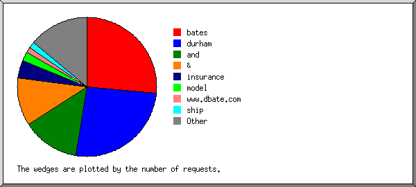

Web Server Statistics for es57045 Web Server Statistics for es57045
Web Server Statistics for es57045 Web Server Statistics for es57045(Go To: Top: General Summary: Monthly Report: Daily Summary: Hourly Summary: Failed Referrer Report: Search Word Report: Browser Report: Browser Summary: Operating System Report: Status Code Report: File Size Report: Redirection Report: Request Report)
This report contains overall statistics.
(Figures in parentheses refer to the 7-day period ending Feb 29
2004 at 11:59 PM).
Successful requests: 7,264 (1,967)
Average successful requests per day: 253 (280)
Logfile lines without status code: 87 (0)
Successful requests for pages: 12 (2)
Failed requests: 236 (53)
Redirected requests: 1,729 (467)
Distinct files requested: 171 (150)
Distinct hosts served: 453 (132)
Corrupt logfile lines: 2
Unwanted logfile entries: 48
Data transferred: 46.790 Mbytes (15.148 Mbytes)
Average data transferred per day: 1.635 Mbytes (2.164 Mbytes)
(Go To: Top: General Summary: Monthly Report: Daily Summary: Hourly Summary: Failed Referrer Report: Search Word Report: Browser Report: Browser Summary: Operating System Report: Status Code Report: File Size Report: Redirection Report: Request Report)
This report lists the activity in each month.
Each unit ( ) represents 1 request
for a page.
) represents 1 request
for a page.
month: #reqs: #pages: --------: -----: ------: Feb 2004: 7264: 12:Busiest month: Feb 2004 (12 requests for pages).
(Go To: Top: General Summary: Monthly Report: Daily Summary: Hourly Summary: Failed Referrer Report: Search Word Report: Browser Report: Browser Summary: Operating System Report: Status Code Report: File Size Report: Redirection Report: Request Report)
This report lists the total activity for each day of the week, summed over all the weeks in the report.
Each unit () represents 1 request
for a page.
day: #reqs: #pages: ---: -----: ------: Sun: 200: 0: Mon: 887: 0: Tue: 1438: 4:Thu: 2659: 6:
(Go To: Top: General Summary: Monthly Report: Daily Summary: Hourly Summary: Failed Referrer Report: Search Word Report: Browser Report: Browser Summary: Operating System Report: Status Code Report: File Size Report: Redirection Report: Request Report)
This report lists the total activity for each hour of the day, summed over all the days in the report.
Each unit () represents 1 request
for a page.
hour: #reqs: #pages: ----: -----: ------: 0: 260: 0: 1: 181: 0: 2: 141: 0: 3: 163: 0: 4: 204: 0: 5: 55: 0: 6: 199: 0: 7: 59: 0: 8: 109: 0: 9: 41: 0: 10: 26: 0: 11: 16: 0: 12: 66: 0: 13: 92: 0: 14: 87: 0: 15: 309: 2:
(Go To: Top: General Summary: Monthly Report: Daily Summary: Hourly Summary: Failed Referrer Report: Search Word Report: Browser Report: Browser Summary: Operating System Report: Status Code Report: File Size Report: Redirection Report: Request Report)
This report lists the referrers containing broken links to the site.
Listing referring URLs, sorted by the number of failed requests.
#reqs: URL
-----: ---
8: http://www.whois.sc/
6: https://www.dbates.com/client/Default.asp
6: http://www.chubb.com/cgi-bin/agentlookup/ziplookupmore4cpi.cgi
3: http://www.chubb.com/cgi-bin/agentlookup/ziplookupmore_v2.cgi
3: https://www.dbates.com/client/accountsettings.asp
2: http://www.dbates.com/signin.asp
1: http://www.dbates.com/
1: http://www.durhamandbates.com/
1: http://www.dbates.com/Default.asp
(Go To: Top: General Summary: Monthly Report: Daily Summary: Hourly Summary: Failed Referrer Report: Search Word Report: Browser Report: Browser Summary: Operating System Report: Status Code Report: File Size Report: Redirection Report: Request Report)
This report lists which words people used in search engines to find the site.

Listing query words, sorted by the number of requests.
#reqs: search term
-----: -----------
38: bates
37: durham
19: and
16: &
6: insurance
3: model
2: www.dbate.com
2: ship
1: oregon
1: -books
1: galleons
1: agencies
1: dbates
1: marine
1: on
1: ships
1: dbates.com
1: or
1: spanish
1: portland
1: ï½%8dï½%8fï½%84ï½%85ï½%8cã%80%80ï½%93ï½%88ï½%89ï½%90ã%80%80ï½%97ï½%81ï½%99
1: examples
1: www.dbates.com
1: scrimshaw
1: bone
1: rigging
1: napoleonic
1: models
(Go To: Top: General Summary: Monthly Report: Daily Summary: Hourly Summary: Failed Referrer Report: Search Word Report: Browser Report: Browser Summary: Operating System Report: Status Code Report: File Size Report: Redirection Report: Request Report)
This report lists the browsers used by visitors.
Listing the top 40 browsers by the number of requests, sorted by the number of requests.
#reqs: browser -----: ------- 2233: Mozilla/4.0 (compatible; MSIE 6.0; Windows NT 5.0) 1397: Mozilla/4.0 (compatible; MSIE 6.0; Windows 98; .NET CLR 1.0.3705; .NET CLR 1.1.4322) 858: Mozilla/4.0 (compatible; MSIE 6.0; Windows NT 5.1) 282: MSFrontPage/4.0 210: Mozilla/4.0 (compatible; MSIE 6.0; Windows 98) 187: Mozilla/4.0 (compatible; grub-client-1.5.3; Crawl your own stuff with http://grub.org) 179: Mozilla/4.0 (compatible; MSIE 6.0; Windows NT 5.1; .NET CLR 1.1.4322) 127: Mozilla/4.0 (compatible; MSIE 6.0; Windows NT 4.0) 85: Mozilla/4.0 (compatible; MSIE 6.0; Windows NT 5.0; .NET CLR 1.1.4322) 77: Mozilla/4.0 (compatible; MSIE 6.0; Windows NT 5.1; .NET CLR 1.0.3705) 72: LinkWalker 68: Mozilla/4.0 (compatible; MSIE 6.0; Windows 98; Win 9x 4.90; .NET CLR 1.1.4322) 62: Mozilla/4.0 (compatible; MSIE 5.01; Windows NT 5.0) 56: Mozilla/4.0 (compatible; MSIE 6.0; AOL 8.0; Windows 98; Win 9x 4.90) 50: Mozilla/4.0 (compatible; MSIE 5.5; Windows NT 5.0; .NET CLR 1.0.3705) 44: Mozilla/4.0 (compatible; MSIE 5.5; Windows NT 5.0; H010818) 44: Scooter/3.3.vscooter 41: Mozilla/4.0 (compatible; MSIE 6.0; Windows NT 5.0; DigExt; .NET CLR 1.1.4322) 39: Mozilla/4.0 (compatible; MSIE 6.0; Windows NT 5.1; Q312461) 36: Mozilla/4.0 (compatible; MSIE 6.0; Windows NT 5.1; Q312461; .NET CLR 1.1.4322) 36: Mozilla/5.0 (Windows; U; Windows NT 5.0; en-US; rv:1.5) Gecko/20031007 Firebird/0.7 35: Mozilla/5.0 (Macintosh; U; PPC Mac OS X; en) AppleWebKit/103u (KHTML, like Gecko) Safari/100 35: Mozilla/4.0 (compatible; grub-client-1.4.3; Crawl your own stuff with http://grub.org) 34: Mozilla/5.0 (Windows; U; WinNT4.0; en-US; rv:1.0.1) Gecko/20020823 Netscape/7.0 32: Mozilla/4.0 (compatible; MSIE 6.0; Windows NT 5.1; .NET CLR 1.0.3705; MSN 8.0; MSN 8.5; MSNbMSNI; MSNmen-us; MSNcIA) 32: Mozilla/4.0 compatible ZyBorg/1.0 Dead Link Checker (wn.zyborg@looksmart.net; http://www.WISEnutbot.com) 31: Googlebot/2.1 ( http://www.googlebot.com/bot.html) 29: Mozilla/4.0 (compatible; MSIE 5.5; Windows NT 4.0; T312461; Fireman's Fund Insurance Company) 29: Mozilla/4.0 (compatible; MSIE 6.0; Windows NT 5.0; Q312461; T312461; .NET CLR 1.0.3705; .NET CLR 1.1.4322) 28: Mozilla/4.0 (compatible; MSIE 6.0; Windows 98; Win 9x 4.90; .NET CLR 1.0.3705) 28: Mozilla/4.0 (compatible; MSIE 6.0; Windows 98; Q312461) 27: Mozilla/5.0 (Windows; U; Windows NT 5.1; en-US; rv:1.4) Gecko/20030624 Netscape/7.1 (ax) 27: Mozilla/4.0 (compatible; MSIE 5.5; Windows 98; YComp 5.0.2.4) 25: Mozilla/4.0 (compatible; MSIE 5.01; Windows NT) 25: Mozilla/4.0 (compatible; MSIE 5.5; Windows 98; Win 9x 4.90) 24: Mozilla/4.0 (compatible; MSIE 6.0; Windows NT 5.1; DigExt; AtHome0107) 24: Mozilla/4.0 (compatible; MSIE 5.5; Windows NT 5.0; AT&T WNS5.2) 23: Mozilla/4.0 (compatible; MSIE 5.5; Windows NT 5.0) 22: Mozilla/4.0 (compatible; MSIE 6.0; Windows NT 5.1; .NET CLR 1.0.3705; .NET CLR 1.1.4322) 22: Mozilla/4.0 (compatible; MSIE 6.0; Windows NT 5.0; Q312461) 548: [not listed: 61 browsers]
(Go To: Top: General Summary: Monthly Report: Daily Summary: Hourly Summary: Failed Referrer Report: Search Word Report: Browser Report: Browser Summary: Operating System Report: Status Code Report: File Size Report: Redirection Report: Request Report)
This report lists the vendors of visitors' browsers.
Listing the top 20 browsers by the number of requests, sorted by the number of requests.
#reqs: browser
-----: -------
6217: MSIE
5839: MSIE/6
378: MSIE/5
334: Netscape (compatible)
282: MSFrontPage
282: MSFrontPage/4
208: Netscape
139: Mozilla/1
72: LinkWalker
44: Scooter
44: Scooter/3
31: Googlebot
31: Googlebot/2
17: Opera
17: Opera/7
17: Yahoo-MMCrawler
17: Yahoo-MMCrawler/3
10: FAST-WebCrawler
10: FAST-WebCrawler/3
6: NaverBot-1.0 (NHN Corp.
6: NaverBot-1.0 (NHN Corp. /
6: Microsoft Data Access Internet Publishing Provider Cache Manager
5: Gigabot
5: Gigabot/1
4: Netscape
4: Netscape/4
3: MFC_Tear_Sample
2: Microsoft URL Control - 6.00.8862
2: TurnitinBot
2: TurnitinBot/1
1: RPT-HTTPClient
1: RPT-HTTPClient/0
1: NPBot (http:
1: NPBot (http://www
1: http:
1: http://www
(Go To: Top: General Summary: Monthly Report: Daily Summary: Hourly Summary: Failed Referrer Report: Search Word Report: Browser Report: Browser Summary: Operating System Report: Status Code Report: File Size Report: Redirection Report: Request Report)
This report lists the operating systems used by visitors.
Listing operating systems, sorted by the number of requests for pages.
#: #reqs: #pages: OS --: -----: ------: -- 1: 719: 12: OS unknown 2: 22: 0: Unix : 22: 0: BSD 3: 105: 0: Robots 4: 85: 0: Macintosh : 85: 0: Macintosh PowerPC 5: 6332: 0: Windows : 1: 0: Windows 95 : 121: 0: Unknown Windows : 1377: 0: Windows XP : 1727: 0: Windows 98 : 2701: 0: Windows 2000 : 191: 0: Windows ME : 214: 0: Windows NT
(Go To: Top: General Summary: Monthly Report: Daily Summary: Hourly Summary: Failed Referrer Report: Search Word Report: Browser Report: Browser Summary: Operating System Report: Status Code Report: File Size Report: Redirection Report: Request Report)
This report lists the HTTP status codes of all requests.
Listing status codes, sorted numerically.
#reqs: status code
-----: -----------
6326: 200 OK
3: 206 Partial content
1729: 302 Document found elsewhere
935: 304 Not modified since last retrieval
4: 401 Authentication required
2: 403 Access forbidden
208: 404 Document not found
2: 405 Method not allowed
20: 500 Internal server error
(Go To: Top: General Summary: Monthly Report: Daily Summary: Hourly Summary: Failed Referrer Report: Search Word Report: Browser Report: Browser Summary: Operating System Report: Status Code Report: File Size Report: Redirection Report: Request Report)
This report lists the sizes of files.
size: #reqs: %bytes:
-----------: -----: ------:
0: 1422: :
1b- 10b: 0: :
11b- 100b: 0: :
101b- 1kb: 1656: 1.19%:
1kb- 10kb: 2990: 15.17%:
10kb-100kb: 1188: 80.54%:
100kb- 1Mb: 8: 3.09%:
(Go To: Top: General Summary: Monthly Report: Daily Summary: Hourly Summary: Failed Referrer Report: Search Word Report: Browser Report: Browser Summary: Operating System Report: Status Code Report: File Size Report: Redirection Report: Request Report)
This report lists the files that caused requests to be redirected to another file. (Usually directories with the final slash missing, or CGI scripts that forced redirections.)
Listing files, sorted by the number of redirected requests.
#reqs: file
-----: ----
566: /component/login.asp
468: /default.asp
164: /client/
144: /client/default.asp
79: /services/
78: /about/
41: /viewdocument.asp
22: /viewdocument.asp?ID=QEBPEDBU
19: /viewdocument.asp?ID=TBBLGBSX
33: /contact.asp
25: /about/news.asp
23: /focus/mvrreg/mvrreg0.asp
21: /focus/mvrreg/default.asp
19: /focus/euse/euse1.asp
11: /customer.asp
8: /events.asp
7: /agent/default.asp
7: /risk101.asp
6: /links.asp
6: /sitemap.asp
4: /directry.asp
4: /forms.asp
3: /focus/euse/
3: /focus/euse/default.asp
2: /client/accountsettings.asp
2: /focus/mvrreg/
2: /agent/
2: /loadform.asp
1: /privacy.asp
(Go To: Top: General Summary: Monthly Report: Daily Summary: Hourly Summary: Failed Referrer Report: Search Word Report: Browser Report: Browser Summary: Operating System Report: Status Code Report: File Size Report: Redirection Report: Request Report)
This report lists the files on the site.
Listing files with at least 20 requests, sorted by the number of requests.
#reqs: %bytes: last time: file -----: ------: ------------------: ---- 489: 8.90%: Feb/29/04 4:19 AM: /resource/toc.gif 488: 1.18%: Feb/29/04 4:19 AM: /resource/dbates.css 276: 1.58%: Feb/24/04 5:28 PM: /_vti_bin/_vti_aut/author.dll 269: : Feb/29/04 4:19 AM: /default.asp 268: 0.15%: Feb/29/04 11:41 PM: /component/login.asp 267: 8.68%: Feb/29/04 4:19 AM: /resource/title.jpg 218: 0.64%: Feb/29/04 4:19 AM: /resource/t_welcome.jpg 216: 11.43%: Feb/29/04 4:19 AM: /resource/homepics.jpg 216: 1.43%: Feb/29/04 4:19 AM: /resource/title.gif 153: 0.41%: Feb/27/04 4:01 PM: /signin.asp 133: 0.42%: Feb/27/04 4:01 PM: /resource/linetab.gif 133: 0.48%: Feb/27/04 4:01 PM: /resource/logon.gif 129: 1.48%: Feb/27/04 4:01 PM: /client/default.asp 110: 0.21%: Feb/29/04 4:20 AM: /resource/spacer.gif 103: : Feb/28/04 7:50 PM: /contact.asp 102: : Feb/28/04 7:25 PM: /about/default.asp 98: 0.09%: Feb/27/04 4:01 PM: /client/resource/divider.gif 97: 0.20%: Feb/27/04 4:01 PM: /client/document/resource/dotdoc.gif 96: 0.23%: Feb/27/04 4:01 PM: /client/resource/serviceteam.gif 96: 0.27%: Feb/27/04 4:01 PM: /client/resource/dbhome.gif 96: 0.45%: Feb/27/04 4:01 PM: /client/document/resource/client.css 96: 0.33%: Feb/27/04 4:01 PM: /client/resource/coverage.gif 92: 13.98%: Feb/28/04 7:50 PM: /resource/contacttx.jpg 90: : Feb/29/04 4:19 AM: /services/default.asp 89: 0.12%: Feb/27/04 4:01 PM: /client/resource/forms.gif 89: 0.30%: Feb/28/04 7:25 PM: /resource/t_about.jpg 89: 0.08%: Feb/27/04 4:01 PM: /client/resource/links.gif 89: 0.41%: Feb/27/04 4:01 PM: /client/resource/title.gif 87: 0.18%: Feb/28/04 7:25 PM: /resource/x_master.jpg 85: 0.29%: Feb/24/04 6:29 PM: /client/zidellmarine/logo.gif 75: 0.10%: Feb/27/04 4:01 PM: /client/resource/settings.gif 74: 9.11%: Feb/28/04 7:25 PM: /resource/about.jpg 66: 8.05%: Feb/29/04 4:19 AM: /resource/services.gif 66: 0.25%: Feb/29/04 4:20 AM: /resource/dialc.jpg 63: 1.64%: Feb/28/04 7:25 PM: /resource/abouttx.jpg 60: 0.18%: Feb/29/04 4:20 AM: /resource/dialp.jpg 59: 0.18%: Feb/29/04 4:20 AM: /resource/dialn.jpg 58: 0.45%: Feb/24/04 5:31 PM: /client/accountsettings.asp 57: 3.77%: Feb/27/04 10:24 PM: /directry.asp 54: 0.22%: Feb/27/04 10:24 PM: /resource/t_contact.jpg 51: : Feb/28/04 7:02 PM: /customer.asp 47: 0.10%: Feb/28/04 7:02 PM: /resource/dotdoc.jpg 46: 0.26%: Feb/28/04 7:02 PM: /resource/t_resource.jpg 42: : Feb/29/04 9:05 PM: /services/prof0.asp 40: 0.29%: Feb/28/04 7:24 PM: /resource/t_clines.jpg 40: : Feb/29/04 9:30 PM: /about/begin.asp 39: 4.50%: Feb/28/04 7:24 PM: /resource/clines.jpg 36: : Feb/28/04 7:25 PM: /services/clines0.asp 36: : Feb/28/04 7:24 PM: /sitemap.asp 35: 0.06%: Feb/24/04 6:29 PM: /client/resource/faq.gif 33: : Feb/27/04 11:06 PM: /events.asp 31: 0.17%: Feb/27/04 11:06 PM: /resource/t_events.jpg 30: 0.12%: Feb/28/04 7:24 PM: /resource/t_sitemap.jpg 29: 0.16%: Feb/29/04 4:21 AM: /resource/special.jpg 28: : Feb/28/04 7:25 PM: /services/clines_r.asp 27: 0.30%: Feb/24/04 5:30 PM: /resource/t_settings.jpg 27: 0.07%: Feb/28/04 7:24 PM: /resource/b_clines.jpg 26: : Feb/27/04 5:28 PM: /about/ships.asp 26: : Feb/28/04 7:25 PM: /risk101.asp 25: 3.92%: Feb/24/04 6:30 PM: /client/coverage.aspx 10: 0.92%: Feb/24/04 6:29 PM: /client/coverage.aspx?id=cgl.pdf 25: : Feb/29/04 4:29 AM: /services/marine_c.asp 25: : Feb/28/04 7:01 PM: /services/consult0.asp 25: : Feb/28/04 7:25 PM: /services/clines_s.asp 25: : Feb/29/04 9:32 AM: /services/marine_x.asp 24: : Feb/27/04 10:26 PM: /about/history.asp 24: 0.16%: Feb/27/04 5:28 PM: /resource/modelship.jpg 23: 0.08%: Feb/28/04 7:25 PM: /resource/t_risk101.gif 22: 0.12%: Feb/28/04 7:25 PM: /resource/reprsent.jpg 22: 0.12%: Feb/29/04 4:21 AM: /resource/involved.jpg 22: : Feb/27/04 10:26 PM: /about/esop.asp 21: 1.79%: Feb/28/04 7:24 PM: /resource/prof.jpg 21: 0.08%: Feb/28/04 7:01 PM: /resource/t_consult.jpg 21: 3.04%: Feb/28/04 7:01 PM: /resource/consult.jpg 21: 0.14%: Feb/27/04 10:26 PM: /resource/history.jpg 21: : Feb/28/04 7:25 PM: /services/clines_i.asp 21: 0.08%: Feb/28/04 7:24 PM: /resource/t_prof.jpg 20: : Feb/25/04 6:40 AM: /links.asp 20: 0.06%: Feb/27/04 10:26 PM: /resource/b_db.jpg 20: : Feb/27/04 10:26 PM: /about/expand.asp 656: 6.50%: Feb/29/04 4:21 AM: [not listed: 80 files]
(Go To: Top: General Summary: Monthly Report: Daily Summary: Hourly Summary: Failed Referrer Report: Search Word Report: Browser Report: Browser Summary: Operating System Report: Status Code Report: File Size Report: Redirection Report: Request Report)